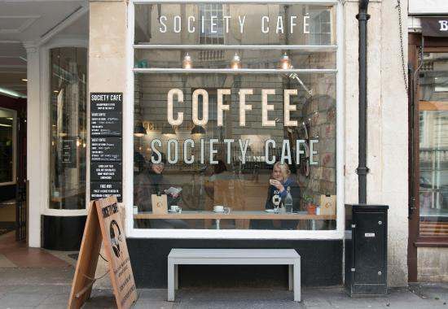
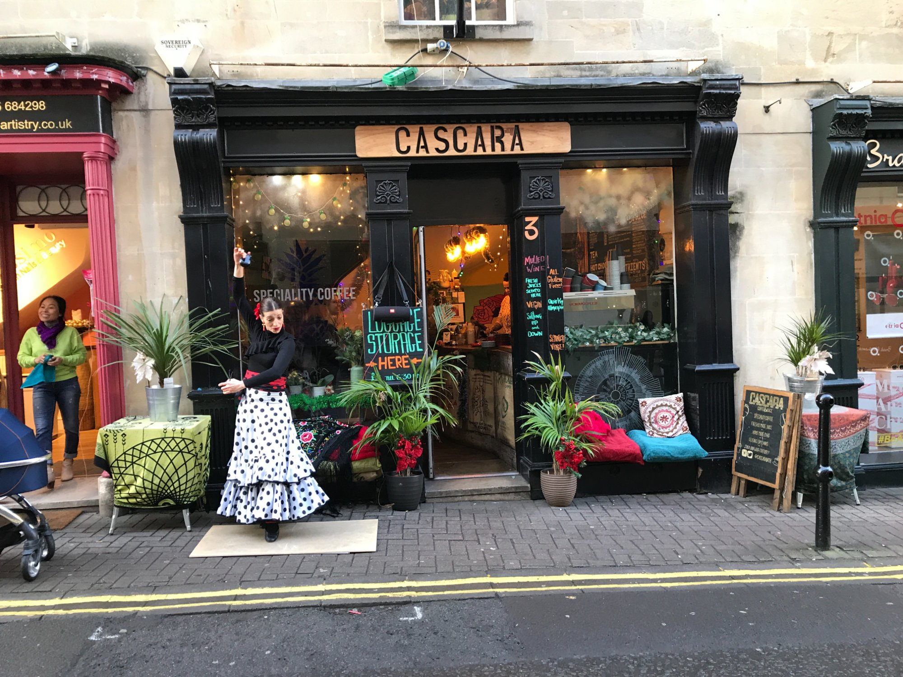
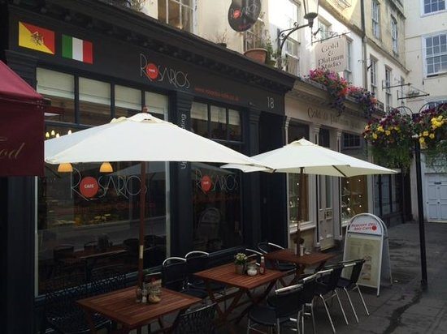
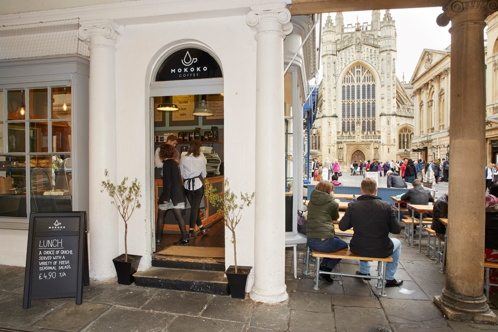

Independent Cafes
Society Cafe

- Location: 19 High Street, Bath BA1 5AH
- Opening Times:
- Mon-Sat: 07:30-18:30
- Sun: 09:00-18:00
- Ambience: 9/10
- Price Range: 2-4
- Student Friendly: Not really, not much working space
- Friendly Staff: 9/10
- Wifi Availability: Yes
- Types of Food: Cakes, Pastries, Breakfast Bowls
- Vegetarian Friendly
Cascara

- Location: 3 Upper Borough Walls, Bath BA1 1RG
- Opening Times:
- Mon-Sat: 08:00-17:00
- Sun: 10:00-16:00
- Ambience: 7/10
- Price Range: 2-5
- Student Friendly: Yes, space to work upstairs
- Friendly Staff: 8/10
- Types of Food: Mostly Vegetarian
- Vegetarian Friendly and Vegan Options
Rosarios Cafe

- Location: 18 Northumberland Place, Bath BA1 5AR
- Opening Times:
- Mon-Wed: 08:00-18:00
- Thu-Sat: 08:00-19:00
- Sun: 09:30-18:00
- Ambience: 8/10
- Price Range: 2-3
- Student Friendly: Not really, not much working space
- Friendly Staff: 8/10
- Wifi Availability: yes
- Types of Food: Brunch Food
- Vegetarian Friendly and Vegan Options
The Bath Coffee Company
- Location: 14 Kingsmead Square, Bath BA1 2AD
- Opening Times:
- Ambience: 6/10
- Price Range: 2-4
- Student Friendly: Not really, not much working space
- Friendly Staff: 8/10
- Types of Food: Cakes and Pastries
- Vegetarian Friendly and Vegan Options
Mokoko Coffee

- Location: 6 Abbey Churchyard, Avon, Bath BA1 1LY
- Opening Times:
- Mon-Sat: 08:00-18:00
- Sun: 09:00-18:00
- Ambience: 9/10
- Price Range: 2-4
- Student Friendly: Yes, Plenty of working space upstairs!
- Friendly Staff: 8/10
- Wifi Availability: Yes
- Types of Food: Brunch, Cakes, Pastries, Salads
- Vegetarian Friendly and Vegan Options